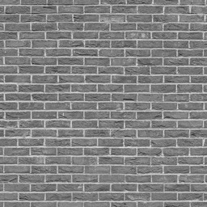
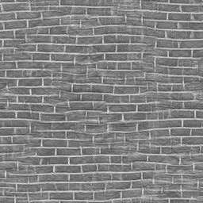
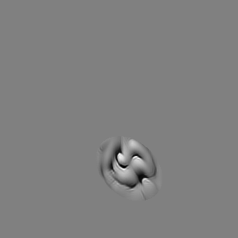
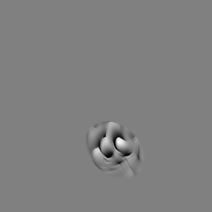
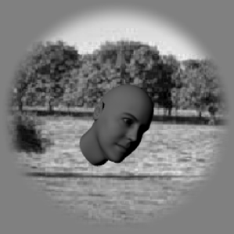
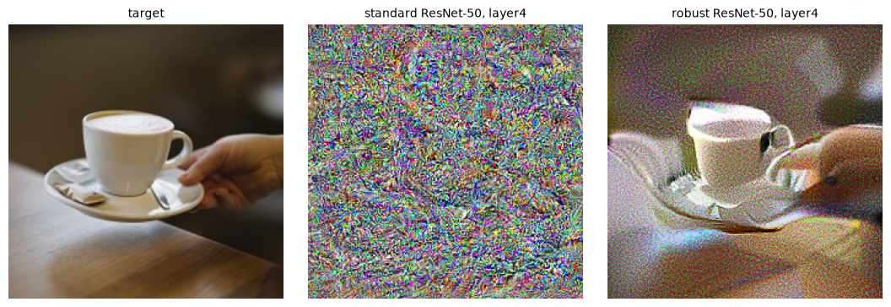

The question
Today is about transformations of the input, in two parts. Lecture 1 probes perceptual representations through metamers, which the primer introduced. Lecture 2 is the fundamentals of image transformations and filters.
The question underneath this half: what information does an image carry, and what should a system keep?
From pixels to objects
A picture can be described at several levels. To a computer it is a grid of brightness numbers. Those numbers keep everything, and nothing in them says wall or ball. One step up is local features, such as the strength of edges from a small derivative filter. Next is texture: in each window, keep how much edge energy there is in each orientation, and throw away the exact positions inside the window. Further up, the description names objects.
A representation keeps some information and throws the rest away. Which information should it throw away? A letter b and the same letter shifted to the right are the same letter to us. In pixels the two images are far apart. The amplitude of the Fourier transform is the same for both: a shift changes only the phases, not the amplitudes. That representation is invariant to position. Invariance is useful when the thrown-away change does not matter for the task, and it is a mistake when it does.
What a metamer is
Two inputs, x1 and x2, that are physically different, and a function f that maps them to exactly the same output, are metamers for f. The inputs can be images, sounds, or any sensory input. f can be the human visual system, an AI model, or any system that infers something from the stimulus.


Whatever differs between two metamers is information f threw away. Whatever they share is what it keeps.
Metamers do two jobs. They reveal what a system represents. And they let us compare systems: make a metamer for one system, then show it to another. If the two systems share their metamers, they throw away the same information. If they do not, the metamers show where they differ.
Metamers are always relative. Relative to a system: a camera’s color filters are not your cones, so two lights that match for you can look different in a photo. Relative to the conditions: two paints can match under the store’s light and not under daylight. Relative to how you look: two images can match in a brief glance in the periphery and come apart when you look straight at them.
Color, the easy case
Color is the easy case because we have knobs. In the color-matching experiments of the 1920s and 1930s, Wright and Guild had observers look at a small field, about 2 degrees across, split in two. A tungsten lamp has energy at every wavelength. Only three cone types sample it, L, M, and S. Those three numbers are all that is left of the spectrum.
A spectrum has energy at hundreds of wavelengths. The cones keep three numbers. Many different spectra give exactly the same three. The differences are patterns of energy that no cone responds to. No amount of attention or training lets you see the difference between two halves of a field that match for your cones.
We use this every day. A camera records three numbers per pixel, through red, green, and blue filters. A screen never reproduces the spectrum of the scene. It lights three primaries in the amounts those numbers say. Yellow on a screen is red and green subpixels lit, with blue off. If the three cone responses agree with what the real scene would have sent, you see the same color. A banana on your screen is a metamer of the real banana, for you.
Knobs for texture, and for sound
Color has three knobs. Are there knobs for texture, shape, objects, and sounds? A texture model treats a few statistics as those knobs. One model first filters like the retina, center-surround at two sizes, then like V1, oriented filters at two orientations and two sizes, then takes the envelope of each oriented response. From those it measures statistics averaged over the image. Start from white noise and adjust the pixels until the statistics match the photo. If the result looks like the same texture, those statistics were enough. If it does not, a missing statistic is an edge of the representation.
The same idea works for sound. McDermott and Simoncelli started with sound textures such as rain, wind, or fire. A model of the ear splits the sound into frequency channels. Statistics of those channels over time are the knobs: how loud each band is, how much it varies, how the bands move together. A synthetic sound matched on those statistics can be heard as the same kind of sound, even though the waveform is different. When it does not sound right, a statistic was missing.
Crowding
Texture statistics matter beyond textures. Keep your eyes on a cross and a letter off to the side is readable. The same letter, with a neighbor on each side, is much harder. This is crowding; Bouma measured it for letters in 1970. One account: the visual system computes texture-like statistics over pooling regions, and those regions grow with distance from where you are looking. Near fixation the regions are small. Farther out, one region can cover all three letters, so it only keeps their statistics. Freeman and Simoncelli built a model like this. People could not tell its images from the original while keeping their eyes on the center. Rosenholtz and colleagues used the same idea to explain crowding.
When there are no hand-made knobs
Bashivan, Kar, and DiCarlo built a model of neurons in area V4 of the monkey, then synthesized images the model predicted would drive one recording site as hard as possible. For one site, those images drove responses of 5.4 to 7.6, against at most 2.1 for any of 640 natural images. They also made images that drive one site while keeping the others quiet. Tuckute and colleagues used a language model to choose sentences predicted to drive, or to suppress, the human language network, and measured the responses with fMRI. In both cases a model chooses the stimulus.



Networks as knobs
Gradient descent on a model’s representation is a knob for looking inside it. In color, the knobs are three lights and the sensors are the cones. In a network, the knob changes every pixel a little at a time, in whatever direction moves the network where we want, and the sensors are the activations at one stage. A scrambled image made to match a network’s third stage can still be called espresso, at 62%, by that network.
That is the second job of metamers. Make an image that matches a natural image at one stage of a model, then show it to people, or to another network. If it is not a metamer for them, the two systems throw away different information, even if they agree on natural images.
Across stages, the pattern is systematic. For a standard network, early-stage metamers can still look like the original, and later-stage metamers look like colored noise to people, even though the network gives them the same name. An adversarially trained network keeps much more of the picture. Training with random noise instead does not. Metamers say not only that a model’s invariances differ from ours, but where, stage by stage, and which training choices close the gap.

Before the lab
What information can be removed from an image while keeping what we perceive? For textures, what did the scrambling and the synthesis throw away? In the periphery, what is lost outside the center of gaze, and why don’t we notice? Would a classifier be fooled by the same changes, or by different ones?
In the lab you make metamers with a library called plenoptic. First a texture: pick a photo and synthesize a new image that matches its statistics. Then a vision network: match the activations at one stage, early or late, and see what survives. Then a sound, with an audio model. The notebook is Metamers, in Colab.